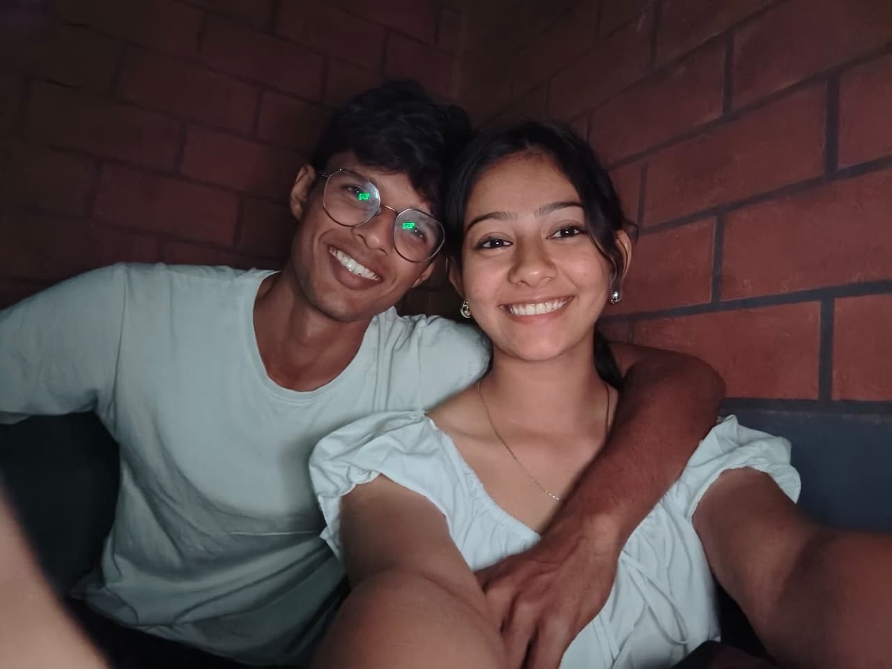
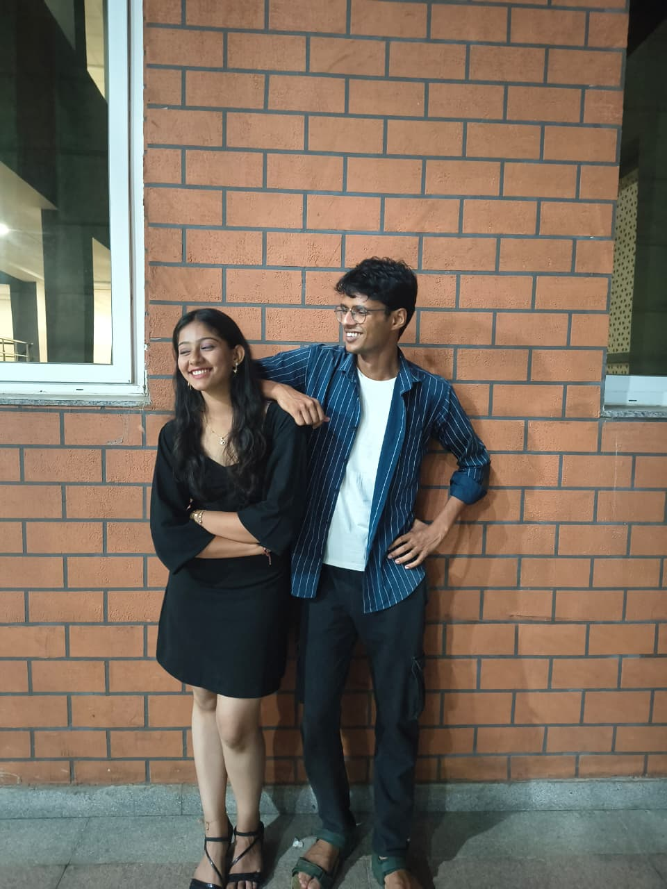
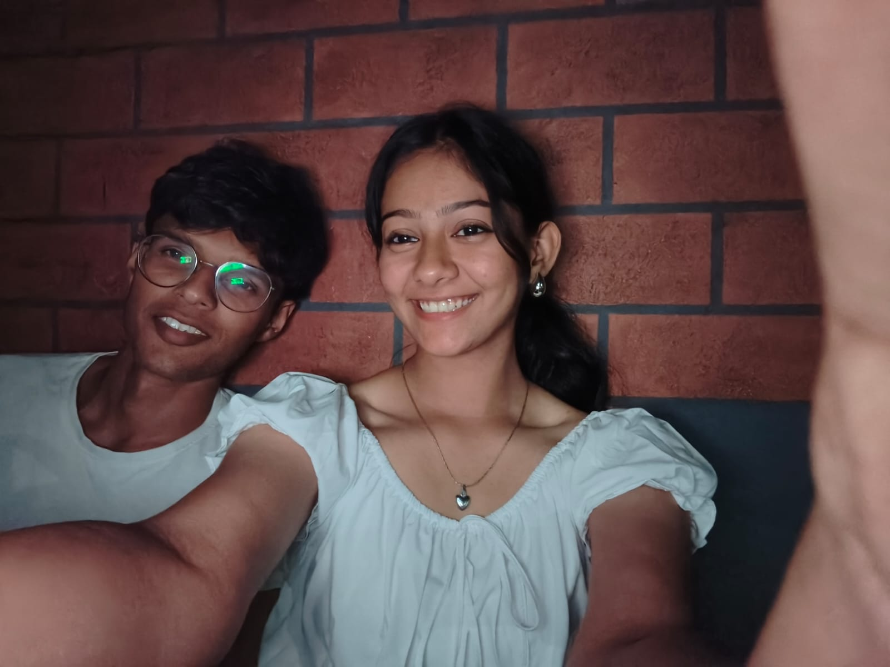
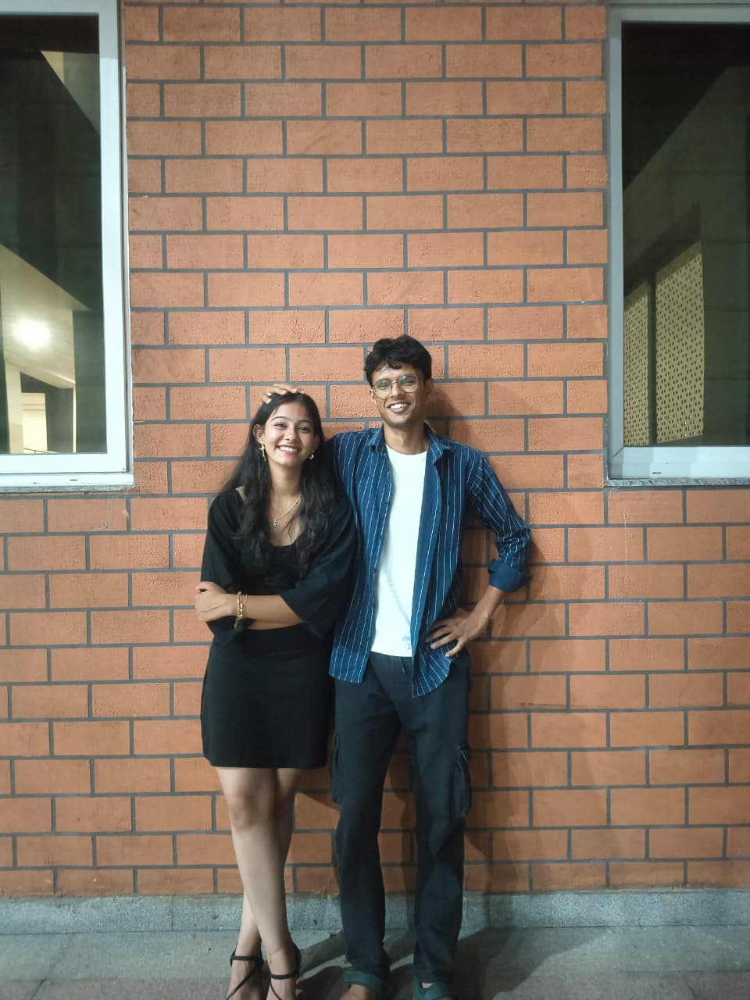
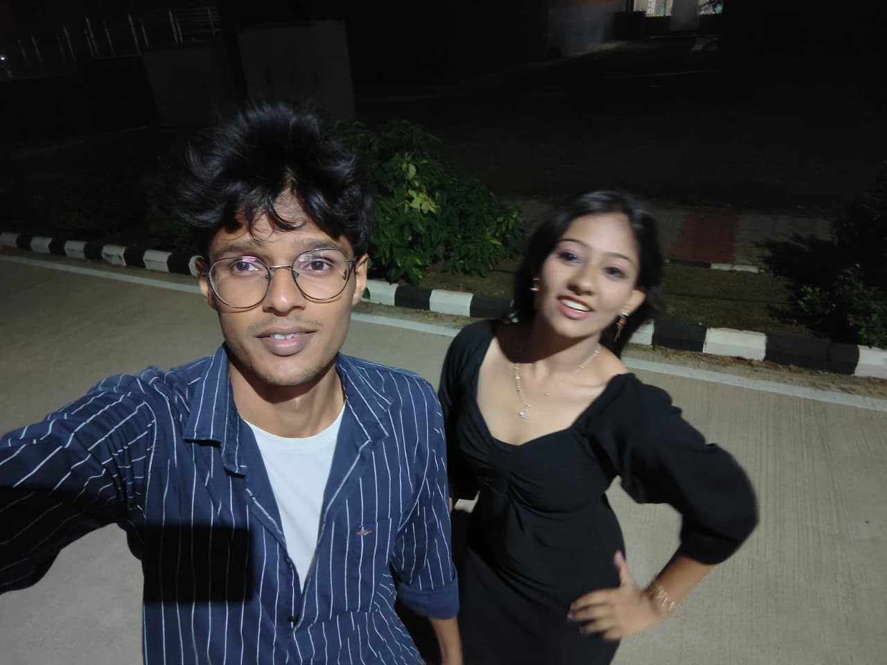

A single decision can redirect an entire life
After all the confusion and conversations,
we finally understood each other deeply.
And somewhere in between those moments,
my heart accepted one thing .... 🤍
now I'm yours.

And finally both of us accepted each other 😊
And we look awesome together 🤌🏻 ....
You and I are perfect for each other. Never believe anything else.
😒

Let’s know each other, tolerate each other, support each other 🌷
and stay with each other
through everything. 🫶

I told you before, and I'll say it again and again and again
I love your eyes, your hair, and
your lips. ❤️
Just friends, huh? Really? 😂

“My love language is physical touch
the little hugs, holding hands, forehead kisses, resting beside
you, and simply feeling your presence close to me.
That's how I express love, comfort, and care the
most.”
